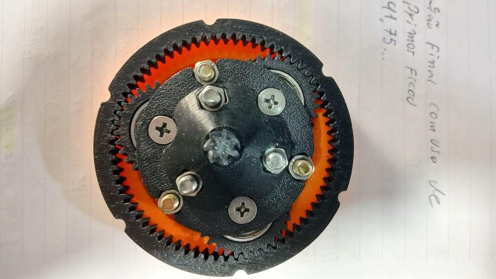
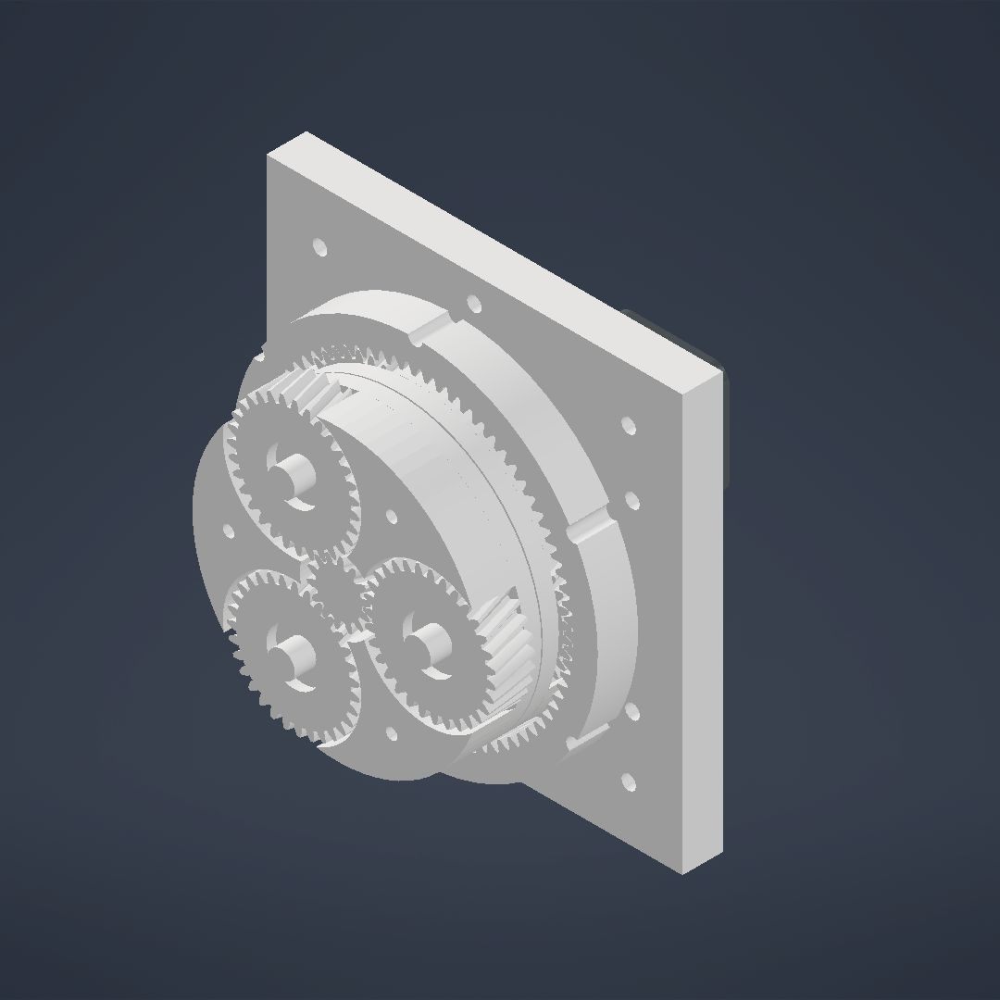

Projeto próprio · desde 2020
FEISAR: braço robótico com redutores impressos
Um braço de quatro eixos impresso em 3D, sobre redutores planetários que eu projetei e imprimi. É o projeto onde o método deste serviço nasceu. Cada peça da revisão atual é gerada por script contra o CAD do Inventor e conferida antes de ir para a impressora.
Poses checadas contra colisão, por versão124.416
Folga achada na base antiga0,7° · 8 mm na ponta
Tensão no dente do sol, motor travado152 MPa vs 25 admissível
Redução1:49, dois estágios 1:7